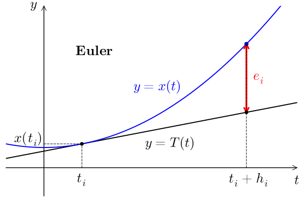

Consistance
Méthode Consistante
Les méthodes de Runge-Kutta sont des méthodes à un pas
x_{i+1} = x_i + h_i\, \Phi(t_i, x_i, h_i), \quad h_i = t_{i+1} - t_i,
que l’on peut écrire sous la forme E_i(x_i, x_{i+1}) = 0 avec
E_i(a, b) \coloneqq b - \left( a + h_i\, \Phi(t_i, a, h_i) \right).
On rappelle pour la suite que x(\cdot) est la solution du problème de Cauchy x'(t) = f(t, x(t)), x(t_0) = x_0.
L’erreur locale de consistance est l’erreur obtenue lorque l’on injecte la solution du problème de Cauchy dans la méthode explicite à un pas. Si la méthode était parfaite, il n’y aurait pas d’erreur. Ainsi, cette erreur de consistance donne une idée de la cohérence de la méthode employée. Elle permet de quantifier à quel point le problème discret (la recherche des x_i) est “proche” du problème de Cauchy.
Le calcul de l’erreur locale de consistance nous donne
\begin{aligned} e_i &= E_i(x(t_i), x(t_{i+1})) = x(t_{i+1}) - x(t_i) - h_i \, \Phi(t_i, x(t_i), h_i) \\[0.5em] &= \int_{t_i}^{t_{i+1}} f(t, x(t)) \, \mathrm{d} t - h_i \, \Phi(t_i, x(t_i), h_i). \end{aligned}
Dans le cas de la méthode d’Euler nous avons l’illustration suivante :

où la tangente est donnée par
T(t) \coloneqq x(t_0) + (t-t_0)\, x'(t_0) = x(t_0) + (t-t_0)\, f(t_0, x(t_0)).
La première notion que nous introduisons pour pouvoir parler plus tard de convergence, porte sur la somme des erreurs locales de consistance. Cette accumulation d’erreurs est purement théorique puisque l’on ne tient pas compte de la solution approchée mais seulement de la solution exacte.
Condition Nécessaire et Suffisante
Nous avons le résultat suivant.
Ordre de Consistance
Pour évaluer l’erreur de consistance à l’indice i, le paramètre important est le pas h_i. On fixe les autres paramètres et on regarde comment se comporte l’erreur en fonction du pas. Nous aurons besoin de la notation de Landau. Rappelons que la notation de Landau e(h) = O\mathopen{}\left({h^p}\right) signifie qu’il existe un voisinage U de 0 et une constante positive C telle que pour tout h \in U, \lVert e(h)\rVert \le C \lvert h\rvert^p.
Si nous avions défini E_i comme étant donnée par
\frac{x_{i+1}-x_i}{h_i} - \Phi(t_i, x_i, h_i),
nous aurions eu E_i(h) = O\mathopen{}\left(h^p\right). L’ordre de consistance est bien p ce qui se verra mieux par la suite car l’ordre de convergence sera donné par l’ordre de consistance dans le cas où la méthode est consistante et stable.
Exemples et Exercices
Le schéma d’Euler explicite est d’ordre p=1 car, par définition de la dérivée, on a
\begin{aligned} E(h) &= x(t_0 + h) - x(t_0) - h \, \Phi(t_0, x(t_0), h) \\ &= x'(t_0)\, h + O\mathopen{}\left(h^2\right) - h \, f(t_0, x(t_0)) \\ &= h\, f(t_0, x(t_0)) - h \, f(t_0, x(t_0)) + O\mathopen{}\left(h^2\right) \\ &= O\mathopen{}\left(h^2\right). \end{aligned}
Nous allons dans l’exercice suivant étudier les relations que doivent vérifier les coefficients a_{ij}, b_i et c_i pour qu’un schéma de Runge-Kutta explicite à 2 étages soit d’ordre 2.
Footnotes
E. Hairer, S. P. Nørsett & G. Wanner, Solving Ordinary Differential Equations I, Nonstiff Problems, vol 8 of Springer Serie in Computational Mathematics, Springer-Verlag, second edn (1993).↩︎